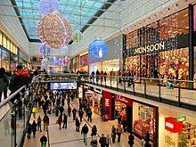

Manchester Arndale isalso known as Arndale shopping Centre, is a popular shopping destination in Manchester, England. Because of its central location, both residents and visitors may readily get to it. Since its initial opening in 1971, the shopping centre has experienced multiple restorations and extensions, converting it into a state-of-the-art retail destination.
Arndale Manchester's four levels are home to more than 200 stores, providing a vast array of shopping choices. Among the most well-known retailers are Apple, H&M, Topshop, and Primark. Apart from retail establishments catering to fashion and lifestyle, the shopping centre also has multiple technology retailers, including Currys PC World and Game. different dining alternatives available to visitors, such as sit-down restaurants, cafes, and fast food businesses. Among the most well-liked restaurants in Arndale Manchester are Prezzo, Wagamama, and Nando's. There is a specialised food court in the retail centre with a wide variety of reasonably priced cuisines. Arndale Manchester hosts various events and attractions to keep visitors engaged and entertained. These occasions include live music events, fashion shows, and seasonal celebrations like Christmas and Easter. The mall exhibits its dedication to giving back to the community by hosting fundraisers and charitable activities. Arndale Manchester is conveniently located near multiple bus routes, making it easy to reach by public transit. Both Manchester Piccadilly and Manchester Victoria train stations are walkable from the shopping centre. There are multiple parking choices, including a multi-story parking structure just beneath the shopping centre, for visitors arriving by car. Arndale is A wealth of information about the shopping center's background, retailers, food options,and events can be found on its official website.Manchester Evening News - Manchester Evening News is a reliable local news source that frequently reports on Arndale Manchester-related news, including events, renovations, and new store openings. Visiting Manchester This official tourism website for Manchester provides insightful information about the top attractions in the city,including Arndale Manchester. This website can assist tourists in organizing their trip to Manchester and finding the best places to eat, shop, and have fun nearby.
in Arndale you can also find many things, Electronics and Technology The Arndale Centre is home to retailers such as Apple, Samsung, and EE for those with an interest in electronics and technology. The newest devices, including tablets, smartphones, and accessories, are available at these stores. It has Beauty and Cosmetics aswell Customers can visit Boots and The Body Shop to find products related to beauty and cosmetics. A variety of skincare, makeup, fragrances, and personal care products are available at these stores. You can find Shoes and Accessories A number of shoe and accessory retailers, including Footasylum, JD Sports, Schuh, and Clarks, are located in the Arndale Centre. To match their style, visitors can choose from a wide selection of shoes, sneakers, purses, and other accessories. In stores Specialty The Arndale Centre has that cater to particular interests in addition to well-known brands. These could be specialty shops selling one-of-a-kind goods or gaming stores like games. If you are hungry you can go to Food court in The Arndale Centre. it offers you a variety of food and dining establishments in addition to shopping options. The center is home to cafes and restaurants serving a wide variety of cuisines for patrons to enjoy. All things considered, Manchester's Arndale Centre provides a thorough shopping experience with a diverse range of retail options to suit various tastes and needs.
<Visitors can choose from a variety of entertainment options at Manchester's Arndale Centre. This busy shopping destination offers a variety of activities to keep you occupied, from dining to shopping to leisure pursuits. Arndale in addition to dining and shopping, it also has a movie theater for those who want more entertainment options. This gives guests the chance to see the newest blockbuster movies or take in indie and art house films in a contemporary, cozy environment. In addition to cinema and retail therapy, the Arndale Centre provides a range of recreational opportunities. Arcades, game rooms, and other entertainment establishments that serve people seeking enjoyable activities outside of traditional retail settings are examples of these.